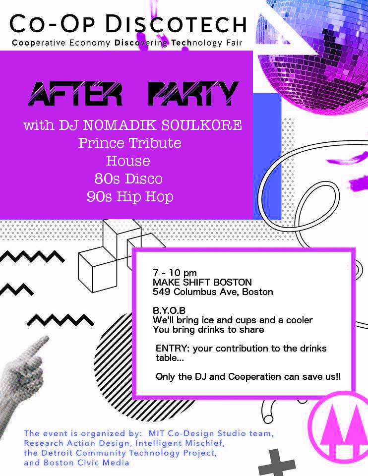

In May 2016, the MIT Co-Design Studio team, Research Action Design, Intelligent Mischief, and the Detroit Community Technology Project called on folks across the world to host and attend a Co-op DiscoTech.
A Co-op DiscoTech (shorthand for a Cooperative Economy Discovering Technology fair) is an event designed for people of all backgrounds and skill levels to learn about how technology can be used to support the growth of the cooperative economy – worker-owned cooperatives, consumer cooperatives, housing cooperatives, and more! Here’s the flyer for the Coop DiscoTech in Boston:
The #CoOpDiscoTech in Boston was a great success, with plenty of people turning out to learn, share, and dance!
Check out the Facebook event with all the pictures from the day, including the After/Party or the EventBrite.

Sounds awesome! How can I participate?
Attend a Co-op DiscoTech near you, or organize your own! We’ll be happy to share our approach, link to your event, and otherwise support you.
Where do these Co-op DiscoTechs happen?
All over the place! Check out the following locations:
- Salem, MA. Saturday, May 14th, 2016, 10am-3pm, Salem YMCA, SAYMedia Studio. Check out the website; Eventbrite; or Facebook event! Don’t forget the hashtag #SalemDiscoTech !
- NYC, NY. Saturday, May 21st, 2016. Thoughtworks.
- Boston, MA. Sunday, May 1st, 2016, 11am-5pm, SEIU 32 BJ District Office, 26 West Street, 3rd Floor, Boston, MA 02111. Get your tickets here.
After party at Make/Shift Boston, 7pm-10pm. 549 Columbus Ave, Boston, MA 02118. Get your tickets here. - Boulder, CO. Saturday, April 30, 12-4pm, University of Colorado, Boulder, Environmental Design Building, 1060 18th Street, Room 134 (across the street and two buildings down from Euclid Parking Garage). More event info here.
- Philadelphia, PA. Sunday, May 1st, 2016, 11am-5pm, Bronstein Hall on Saint Joseph’s University Campus. Get your tickets here.
- Oakland, CA. Sunday, May 1st, 2016, 11am-2pm, Citizen Engagement Lab – 1330 Broadway Suite 300, Oakland, CA 94612. Get your tickets here.
- London, United Kingdom. Sunday, May 1st, 2016, 12-4pm, NWSPK HOUSE, 133 Bethnal Green Road, London E2. NWSPK site here. Event etherpad here.
See this great blog post by Danny Spitzberg in Oakland, breaking down what happened!
Cool! Tell me more about DiscoTechs.
Our DiscoTechs follow the model developed by the Detroit Digital Justice Coalition:

- DiscoTech Zine, by Detroit Digital Justice Coalition
A DiscoTech is a community-based, community-organized, multimedia workshop and fair. At a DiscoTech, participants learn more about the impacts and possibilities of technology, and take part in fun, interactive and media-based workshops. Discotech workshops are designed to demystify technology and create a space where we can inform and engage our community […] A Discotech utilizes the unique skills and expertise within each community, and morphs to adapt to changing needs. [Source: “How To Discotech” Zine, by the DDJC.]
The Co-op DiscoTechs are free, open, multi-site events. This page is for sharing information about these events, as well as for resources to help you organize your own DiscoTech!
I think I understand “DiscoTech,” but what is the “Co-op” about?
At the Co-op DiscoTechs, we’ll focus on creating welcoming spaces where a wide range of people (not just techies!) will feel welcome sharing and learning about each other’s experiences with cooperatives: worker-owned co-ops, consumer co-ops, housing co-ops, hybrid cooperatives, co-op support organizations … pretty much anything that has to do with the cooperative economy! We’re also inviting cooperative organizations, technologists, developers, and designers to come to the DiscoTech to learn, teach, sprint, hack, meet up, explore projects, and build community together.
We’ll dive in deep to understand worker cooperative tools, systems, and histories, through speakers, skillshares, workshops, and activities open to all. We’ll also get hands-on with tools and approaches that can strengthen worker, consumer, housing, and hybrid cooperatives. We’ll link existing co-ops, technologists, designers, and community organizers to strengthen our strategies and tools for a cooperative future!
How to organize your own Co-op DiscoTech:
-
For general background on DiscoTechs, check out this DiscoTech Zine, by the Detroit Digital Justice Coalition: http://detroitprojectarchive.com/client/DDJC_amc2012.pdf.zip
-
For more Co-op DiscoTech organizing resources, check out this folder: http://bit.ly/coop-discotechs-resources.
-
Please get in touch by emailing Katie: klarthur AT mit.edu
Sign up for occasional email updates here:
Pingback: Garage Lab | 1 y 2 de marzo: Countersurveillance DiscoTech en Garagelab | Un espacio de trabajo colaborativo y multidisciplinario: Hackerspace | Club de hacedores
Pingback: » Codesign Studio: Mar 1-2 CounterSurveillance DiscoTech becky hurwitz the musical
Pingback: The Blow Magazine | DiscoTech events: discover anti-surveillance technology
Pingback: Legal technology projects worked on at UX Sprint for Security and Privacy Tools, 1-2 March 2014 | Legal Informatics Blog
Pingback: TECH: HACKING BACK AT SURVEILLANCE | DigBoston
Pingback: On May 1, Join or Organize a Co-op DiscoTech Near You – The Internet of Ownership
Pingback: DiscoTech coming up in May – WORC’N
Pingback: Starting Worker Co-op Businesses: Tools, Strategies, and Platforms for Success – The Internet of Ownership